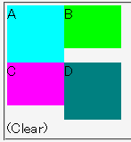
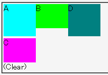

2003-04-28修正。例示の変更と補足の追加。
CSS2では、フロートは自身より前にあるフロートより上に置かれてはならないと決められている。しかしWinIEでは、フロートを置ける領域がある場合に、自身より前にあるフロートより上に後続のフロートが置かれてしまうことがある。
<div style="float:left; width:4em; height:4em; background:aqua;">A</div> <div style="float:left; width:4em; height:3em; background:lime;">B</div> <div style="float:left; clear:left; width:4em; height:3em; background:fuchsia;">C</div> <div style="float:left; width:4em; height:4em; background:teal;">D</div> <div style="clear:left;">(Clear)</div>
Cのフロートはclearプロパティにより回り込みが抑制されています。Bのフロートの右にはフロートを置ける領域がありますが、Dのフロートは前にあるCのフロートより上に置かれてはならないため、DのフロートはCのフロートの真横（右）に置かれるはずです。
N7.02での表示（標準モード）
WinIE6.0での表示（標準モード）
このバグは、フロート化したボックスを並べているとき発生します。しかし、フロートでないボックスを途中に挟むとこのバグは発生しません。
なお、このバグに似た現象がOpera7でも発生しますがOpera7ではこの方法を用いてもバグを完全には回避できません。詳しくはOperaバグ044を参照してください。
<div style="float:left; width:4em; height:4em; background:aqua;">A</div> <div style="float:none; margin-left:4em; width:4em; height:3em; background:lime;">B</div> <div style="float:left; clear:left; width:4em; height:3em; background:fuchsia;">C</div> <div style="float:left; width:4em; height:4em; background:teal;">D</div>
WinIE6.0では標準・互換モードともに不具合の発生が確認されました。